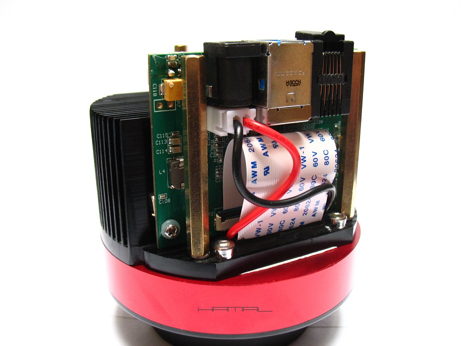
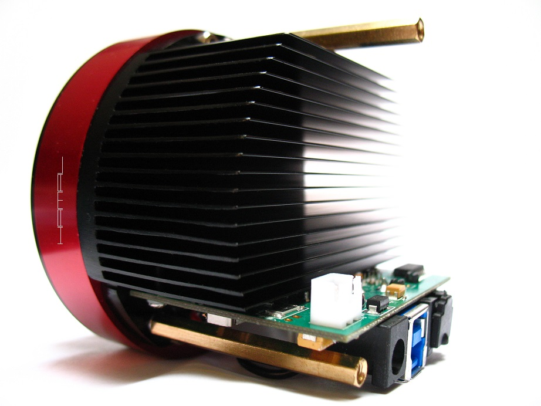
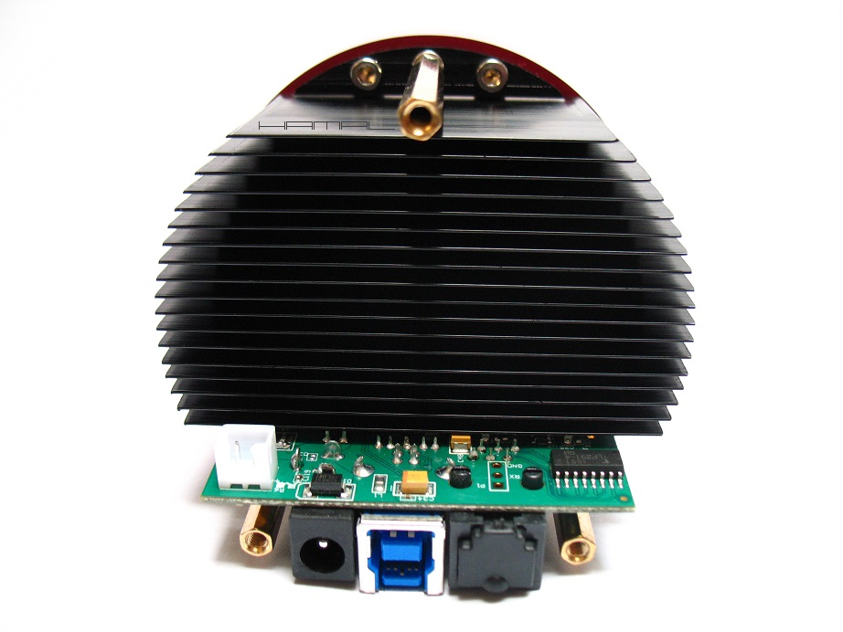
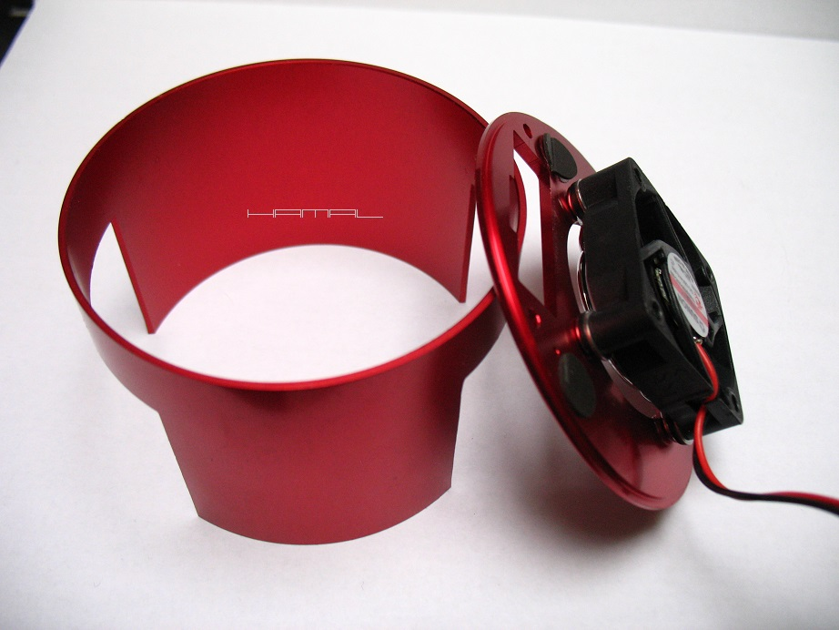
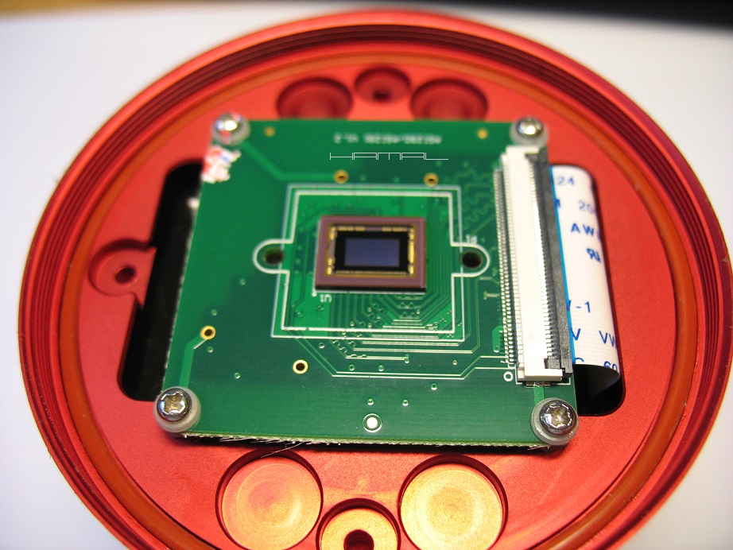
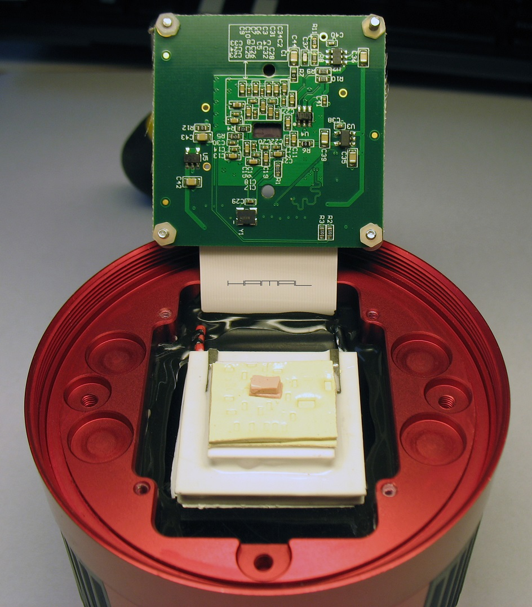
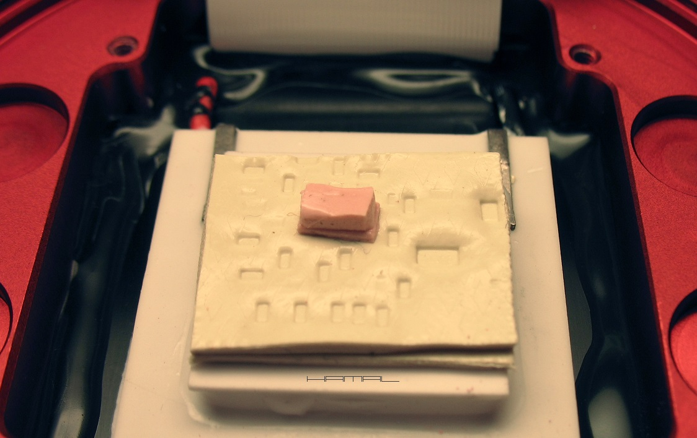
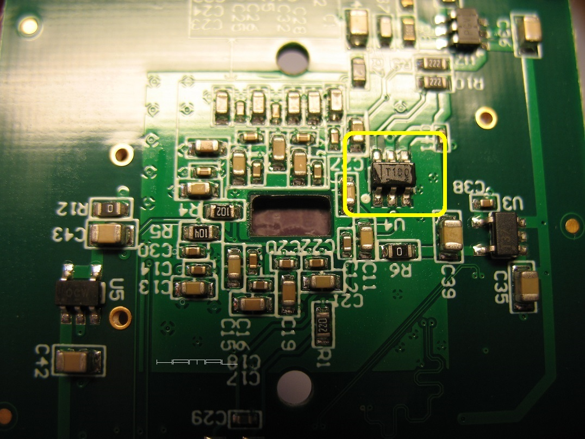

.
JAK ZBUDOWANA JEST KAMERKA
|
Mam umysł ściśle techniczny :) lubię wiedzieć, jak zostały skonstruowane różne urządzenia, chęć grzebania i rozkręcania sprawia, że zaglądam tam, gdzie zazwyczaj długo po zakupie się nie zagląda. Tym razem było podobnie, postanowiłem poznać "wnętrzności" urządzenia i zobaczyć zastosowane przez producenta rozwiązania :D A skoro już tego dokonałem, to czemu nie podzielić się tym, co zobaczyłem z innymi, może Wam się to do czego przyda. Poniżej zdjęcia wraz z opisem z autopsji mojej kamerki ZWO ASI 290MM-C Zwiedzanie zaczniemy od tyłu, tam, gdzie znajduje się radiator i elektronika główna.  Jak widać, w kamerkach tego rodzaju, radiator stanowi znaczący element konstrukcyjny.   Obudowa wraz z tylną ścianką i wentylatorkiem.  Przechodzimy do przodu. Płytka matrycy wraz z matrycą.  A po podniesieniu płytki matrycy, robi się nam naprawdę ciekawie :)  Torcik? Okazuje się, że ciepło z matrycy do Ogniwa Peltiera transportują nam Termopady, a nie jak ongiś w Atikach, kostki jakiegoś stopu. Termopad to taśma/pianka, która ma bardzo dużą zdolność przekazywania ciepła z elementów elektronicznych na elementy chłodzące.  Poniżej, płytka elektroniki matrycy, od spodu. Na zdjęciu widać niewielki otwór stanowiący jedyny bezpośredni dostęp do spodu matrycy oraz ciekawostkę, mianowicie, czujnik temperatury T100 (zaznaczony na żółto), ale to już osobna opowieść, do przeczytania TUTAJ  
|